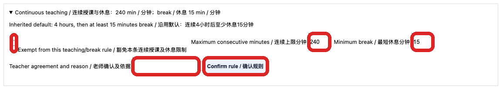

Teacher teaching limits and rest breaks
排课教务及管理者 / Scheduling staff and managers
使用方法 / How to use按编号逐步操作，红框标出本步操作位置；页面或权限不一致时停止并联系主管。
Follow each numbered step. Red boxes identify the relevant control. If the page or access differs, stop and contact your manager.
其他老师默认连续授课最多 4 小时；继续排课前至少休息 15 分钟。Jasmine 已设置个人例外，具体以她本人当前规则为准。
The default for other teachers is a maximum of four continuous teaching hours, followed by at least a 15-minute break. Jasmine has an individual exception; check her current rule.

管理者打开老师资料中的月历页面，展开连续授课规则。核对老师姓名、最长连续分钟数和最短休息分钟数；不要在未经确认时修改。
A manager opens the teacher’s calendar and expands the continuous-teaching rule. Check the teacher, maximum continuous minutes and minimum break. Do not change an unconfirmed rule.
由管理者先与老师确认并记录原因，再按个人情况调整。勾选豁免会使该老师不受此连续授课限制；其他老师仍按各自规则。
A manager confirms an individual arrangement with the teacher and records the reason. An exemption removes this continuous-teaching restriction for that teacher; other teachers retain their own rules.
若系统提示会超过连续授课上限，先调整时间并留足休息，或请管理者确认个人规则。保存前重新预览课表及其他冲突。
If scheduling would exceed the limit, adjust the time and allow the required break, or ask a manager to confirm the individual rule. Preview the schedule and other conflicts before saving.